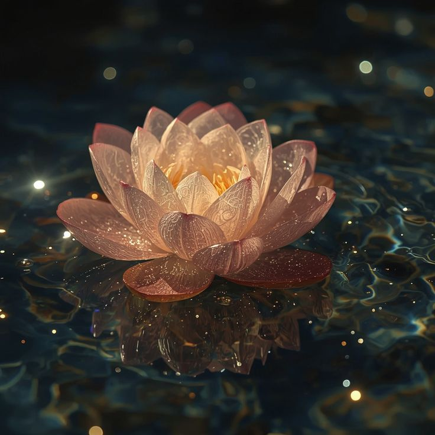

Espero que esto te guste y perdon por ser muy exagerado
Cuando me enamoré de ti
Dedicado para Mel
Alguna vez me dijeron que, cuando
conociera a la persona correcta,
me daría cuenta de inmediato, que
prácticamente al verla,
lo sentiría.
Hablo de eso que todos los que se han
enamorados afirman sentir al estar con la
persona que aman:
esa calma, pasión
o deseo sin igual
que solo una persona es capaz de
despertar en ti.
La realidad es, que no me di cuenta de que
lo había sentido hasta mucho tiempo
después, cuando te vi riendo por alguno de
mis chistes y, al escuchar tu risa, todo tuvo
sentido dentro de mí.
Fue como si, de alguna manera, en
aquellos instantes tuviera la certeza de que
todo lo que estaba mal en el mundo había
dejado de estarlo.
Mis propios fragmentos dejaron de
sentirse como elementos aislados y volví a
percibirme como un ente íntegro,
alguien digno de estar contigo.
Por eso es que ya no creo en las fantasías
que alguna vez me contaron con respecto
al amor,
porque cuando me enamoré de ti,
comprendí que el amor tiene nombre,
rostro, risa, olor y hasta
una sensación distinta para cada persona.
El mío, por ejemplo, lleva por delante el
nombre tuyo.
Al pensarlo, solo logro vislumbrar tus ojos
iluminados por el sol naciente y, si
quisiera denominarlo con un sonido, sin
duda sería con la melodía de tu voz.
